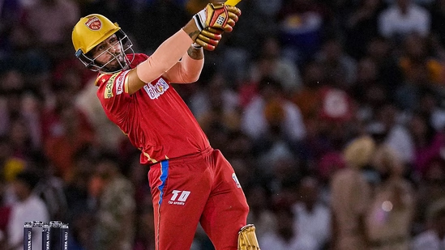
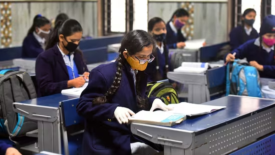

SRH vs KKR Live Score, IPL 2023: Brook departs for duck in chase as Sunrisers Hyderabad falter vs Kolkata Knight Riders
SRH vs KKR Live Score, IPL 2023: Follow here live score and latest updates of Sunrisers Hyderabad vs Kolkata Knight Riders, in Hyderabad.
IPL 2023 SRH vs KKR Live Score: Kolkata Knight Riders have set a target of 172 runs vs Sunrisers Hyderabad in Match 47 of IPL 2023, at the Rajiv Gandhi International Stadium in Hyderabad on Thursday. KKR reached 171/9 in 20 overs, with Nitish Rana and Rinku Singh making important contributions. In an innings, where their batting order collapsed, KKR saw Rana register 42 runs off 31 balls, including three fours and three sixes. Meanwhile, Rinku smacked 46 off 35 deliveries, including four fours and a six.
CBSE Result 2023 LIVE: List of websites for CBSE Class 10, 12 board results
CBSE Class 10, 12 Result 2023 Live Updates: CBSE Class 10, 12 board exam results will be published on results.cbse.nic.in. Check updates here.
CBSE Result 2023 Live Updates: Central Board of Secondary Education (CBSE) will announce Class 10, 12 result 2023 in due course of time. The date and time will be shared with students ahead of resuts. Both Class 10 and 12 results are expected on the same day.
Candidates who have appeared for CBSE Class 10, 12 board exams in the country and abroad can check their results on various platforms- websites, mobile app and also through SMS. The official website to check cbse results is cbseresults.nic.in along with official website of CBSE - cbse.gov.in and cbse.nic.in.
This year CBSE Board exams 2023 started on February 14, 2023 for both Class 10 and Class 12. The Class 10 board exam ended on March 21 and Class 12 exam concluded on April 5, 2023. A total of 38,83,710 students - 21,86,940 Class 10 and 16,96,770 Class 12 - were eligible to appear in this year's exams. Follow this blog for latest updates on result date and time, websites to check, toppers, pass percentage and other details.
Explained: India's infrastructure drive in Arunachal Pradesh's border villages to counter China
India has scaled up its defences, deploying cruise missiles, howitzers, US-made Chinook transport helicopters and drones.
Prime Minister Narendra Modi and Chinese President Xi Jinping.
Freshly laid roads, bridges, upgraded military camps, and new civilian infrastructure dot the winding high Himalayan route to the Indian frontier village of Zemithang -- which China renamed last month to press its claim to the area.
New research may improve type-2 diabetes treatment in India: Lancet study
The collaborative research was conducted by King Edward Memorial (KEM) Hospital Research Centre, Pune and Lund University in Sweden on genetic similarities and differences between subgroups of type 2 diabetes in India and Europe
The knowledge will help improve treatment of diabetic patients in India, claim the researchers. (REPRESENTATIVE PHOTO)
India's over 74.2 million diabetic population is likely to increase to 124.9 million people by 2045, according to the International Diabetes Federation. A latest study published in May 2023 edition of “The Lancet Regional Health-Southeast Asia” confirms that the genetic scores developed in European patients are applicable on patients in western India, though there are differences in the associations between the two populations.
Why Are People Rushing To Get This Stylish New SmartWatch? The Health Benefits Are Incredible
See why this new smartwatch is gaining popularity in India and selling out everywhere...
For a long time, the smartwatch industry had just a few big companies that could set any prices they wanted and kept ripping off customers. But now one tech startup is turning the $45 billion smartwatch industry on its head.
The company called GenFit Watch has figured out a way to offer a far superior product (even the biggest tech geeks agree) at a fraction of the price.
Lunar Eclipse 2023 on May 5: Indian cities that will witness Chandra Grahan, city-wise timing of Penumbral Lunar Eclipse
The first Lunar Eclipse of 2023 falls on May 5. See which Indian cities will witness the Penumbral Chandra Grahan and city-wise time.
The first Lunar Eclipse of 2023 falls on May 5, and it will be a Penumbral Lunar Eclipse. People in India will be able to witness this celestial phenomenon. A Lunar Eclipse occurs when the Earth passes between the Sun and the Moon, casting a shadow on the Lunar face. Meanwhile, a Penumbral Lunar Eclipse occurs when the Moon passes into the lighter outer region of the Earth's shadow, called the Penumbra. It is an area where the Earth appears to cover part of the Sun's disk but not all of it.
This means when the Moon is within the Penumbra, it receives less light from the Sun and is dimmed but still remains somewhat illuminated. A Penumbral Lunar Eclipse is difficult to observe due to the subtle dimming effect. Sometimes it is only visible in carefully-controlled photographs or by people with acute eyesight. If the weather conditions remain favourable, find out the Indian cities which will be able to witness the first Chandra Grahan of 2023.
Buddha Purnima 2023: Date, history, significance, celebrations and all you need to know about Buddha Jayanti
Buddha Purnima or Buddha Jayanti falls on May 5. Here's all you need to know about its history, significance, celebrations, and more.
The auspicious festival of Budhha Purnima is just around the corner. Also known as Buddha Jayanti, the occasion is celebrated with much pomp and marks the birth anniversary of Lord Gautam Buddha, revered as the founding figure of Buddhism. On this day, devotees vow to follow the teachings of Gautam Buddha, take a bath early in the morning to cleanse themselves of all impurities, clean their homes and follow rituals dedicated to the festival.
Additionally, Buddha Purnima holds cultural and spiritual significance for the global community who follow Buddhism and is celebrated majorly in East Asia and South Asia, including India, Sri Lanka, Nepal, Bhutan, Tibet, Thailand, Tibet, China, Korea, Laos, Vietnam, Mongolia, Cambodia, Indonesia, and more. Find out all about the date, history, significance and celebrations related to Buddha Purnima below.
Now, Mumbaikars can book parking slots online before venturing out

The civic body is seeking to implement a parking management solution, proposed by the Mumbai Parking Authority, through an integrated IT system that will digitise and consolidate the city's entire inventory of existing and proposed on-street and off-street parking.
Mumbai: Thanks to an initiative by the BMC, it will soon be possible for vehicle-owners to get information about all the parking lots in Mumbai and book a slot by paying online. The civic body is seeking to implement a parking management solution, proposed by the Mumbai Parking Authority, through an integrated IT system that will digitise and consolidate the city's entire inventory of existing and proposed on-street and off-street parking.